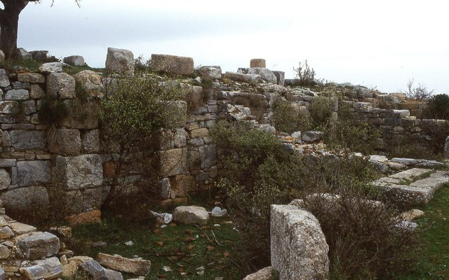
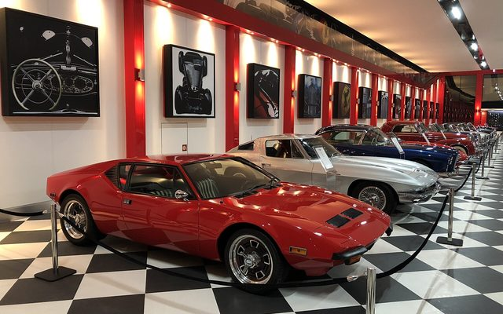

Kültür Varlıkları指南收录了伊兹密尔的43个地点：20 考古遗址, 18 博物馆, 4 城堡与历史建筑, 1 宗教建筑。下面是重点推荐、地图和完整列表。
⭐ 重点推荐

1 · 伊兹密尔 · 考古遗址帕加马卫城
贝尔加马卫城是希腊化时期帕加马王国都城帕加马的政治和文化中心，建在一座高出平原数百米的陡峭山丘上。在阿塔罗斯王朝统治下，这座城市在艺术和学术上可与亚历山大城媲美，以图书馆和羊皮纸闻名。最引人注目的是依山开凿的剧场，它是古代世界最陡峭的剧场之一，而罗马图拉真神庙的白色大理石柱则勾勒出天际线。著名的宙斯祭坛浮雕现藏于柏林。可乘缆车上山；自…

2 · 伊兹密尔 · 考古遗址以弗所
以弗所是古代最大的港口城市之一，也是罗马亚细亚行省最辉煌的中心之一；七大奇迹之一的阿耳忒弥斯神庙就在附近。沿着大理石铺就的库雷特斯大街走下去，经过喷泉、神庙、公共厕所和商铺，可以一步步体会当年的日常生活。街道尽头，塞尔苏斯图书馆的两层立面是被拍摄最多的罗马建筑之一。可容纳约 25000…

3 · 伊兹密尔 · 考古遗址帕加马阿斯克勒庇俄斯神殿遗址
帕加马的阿斯克勒庇俄斯神殿供奉医神阿斯克勒庇俄斯，是古代世界最著名的疗养中心之一。病人使用神圣的泉水，接受沐浴、饮食、音乐和戏剧疗法；解梦是治疗的重要组成部分。帕加马名医盖伦正是汲取这一传统，并在这里行医。游客可以看到圣道、柱廊庭院、小剧场以及通往治疗建筑的地下拱廊。自 2014…
🗺 地图
📍 全部地点 (43)
考古遗址 (20)
帕加马卫城考古遗址 · UNESCO以弗所考古遗址 · UNESCO帕加马阿斯克勒庇俄斯神殿遗址考古遗址 · UNESCO 贝尔加马红色巴西利卡考古遗址 · UNESCO
贝尔加马红色巴西利卡考古遗址 · UNESCO 士麦那古集市遗址考古遗址
士麦那古集市遗址考古遗址 阿亚苏鲁克圣约翰大教堂遗址考古遗址
阿亚苏鲁克圣约翰大教堂遗址考古遗址 以弗所山坡住宅考古遗址
以弗所山坡住宅考古遗址 埃律特莱古城考古遗址
埃律特莱古城考古遗址 古士麦那考古遗址
古士麦那考古遗址 卡拉贝尔岩石浮雕考古遗址
卡拉贝尔岩石浮雕考古遗址 克拉罗斯遗址考古遗址
克拉罗斯遗址考古遗址 科洛封古城考古遗址
科洛封古城考古遗址 库迈古城考古遗址
库迈古城考古遗址 勒贝多斯古城考古遗址
勒贝多斯古城考古遗址 梅特罗波利斯遗址考古遗址
梅特罗波利斯遗址考古遗址
诺提昂古城考古遗址 福西亚古城（福恰）考古遗址
福西亚古城（福恰）考古遗址 特奥斯遗址考古遗址
特奥斯遗址考古遗址 耶希洛瓦土丘考古遗址克拉佐美奈遗址考古遗址
耶希洛瓦土丘考古遗址克拉佐美奈遗址考古遗址博物馆 (18)
 以弗所博物馆博物馆
以弗所博物馆博物馆 艾哈迈德·皮里什蒂纳城市档案馆和博物馆博物馆
艾哈迈德·皮里什蒂纳城市档案馆和博物馆博物馆 阿卡斯艺术中心博物馆
阿卡斯艺术中心博物馆 贝尔加马博物馆博物馆
贝尔加马博物馆博物馆 比尔吉查克尔阿阿宅邸博物馆
比尔吉查克尔阿阿宅邸博物馆 博斯坦勒露天考古博物馆博物馆
博斯坦勒露天考古博物馆博物馆
钥匙博物馆博物馆 拉蒂费夫人宅邸纪念馆博物馆
拉蒂费夫人宅邸纪念馆博物馆 恰姆勒克蒸汽机车博物馆博物馆
恰姆勒克蒸汽机车博物馆博物馆 切什梅博物馆博物馆
切什梅博物馆博物馆 伊兹密尔考古博物馆博物馆
伊兹密尔考古博物馆博物馆 伊兹密尔文化艺术工厂博物馆以弗所体验博物馆博物馆爱琴大学自然历史博物馆博物馆蒂雷博物馆博物馆厄德米什博物馆博物馆伊兹密尔阿塔图尔克博物馆博物馆伊兹密尔绘画与雕塑博物馆博物馆
伊兹密尔文化艺术工厂博物馆以弗所体验博物馆博物馆爱琴大学自然历史博物馆博物馆蒂雷博物馆博物馆厄德米什博物馆博物馆伊兹密尔阿塔图尔克博物馆博物馆伊兹密尔绘画与雕塑博物馆博物馆